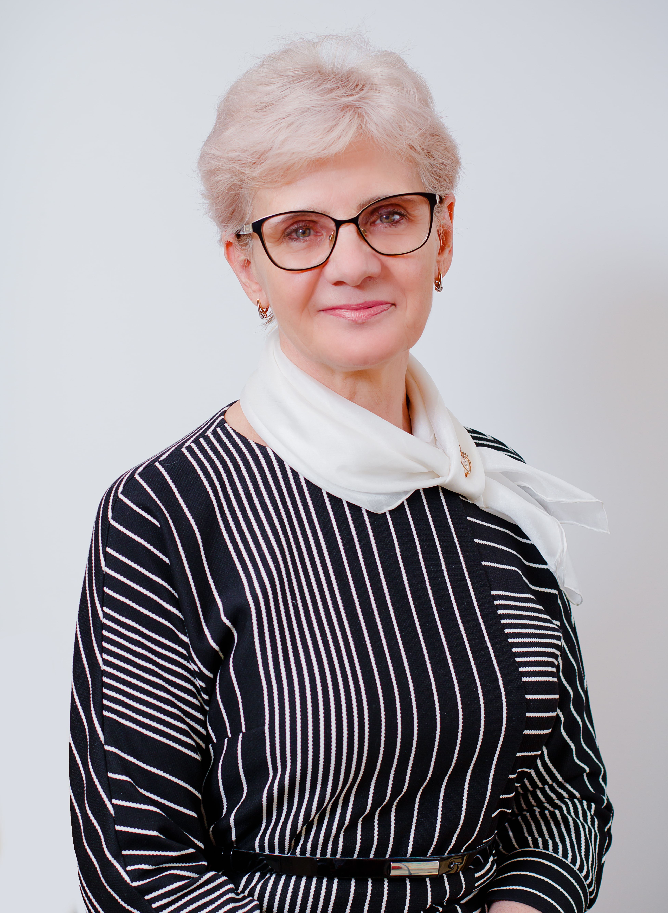

Детский сад Международной школы «Мирас» г. Астана открыл свои двери в августе 2010 года, предоставляя уникальные образовательные возможности для самых маленьких мирасовцев в возрасте от 2 до 5 лет.
Интегрированная учебная программа детского сада, сочетающая в себе лучший опыт отечественного дошкольного образования и требования программы Международного бакалавриата (IB PYP), направлена на обучение через исследование, развитие навыков и знаний, необходимых для дальнейшего успешного обучения детей. Обучение ведется на русском языке с изучением казахского, также работает международная группа. Английский язык является неотъемлемой частью учебной программы и изучается всеми детьми.
В течение дня дети окружены вниманием и заботой не только высококвалифицированных воспитателей, но и медиков, логопедов, психолога, преподавателей других предметных дисциплин. Пятиразовое питание, соответствующее установленным в Республике Казахстан требованиям, проходит ежедневный обязательный контроль медицинской службы. Во второй половине дня дети разных групп вместе посещают различные спортивные, академические и музыкальные кружки по выбору родителей.
Руденко Ирина Ивановна
Координатор по дошкольному воспитанию